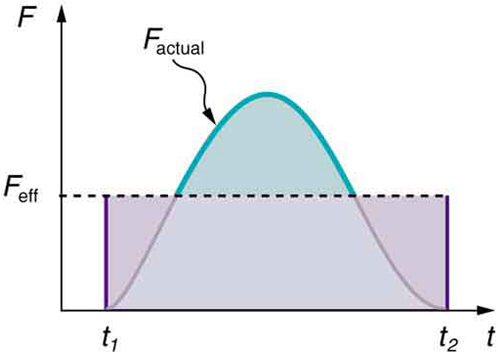
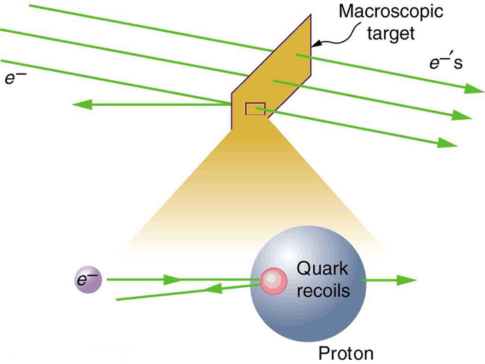
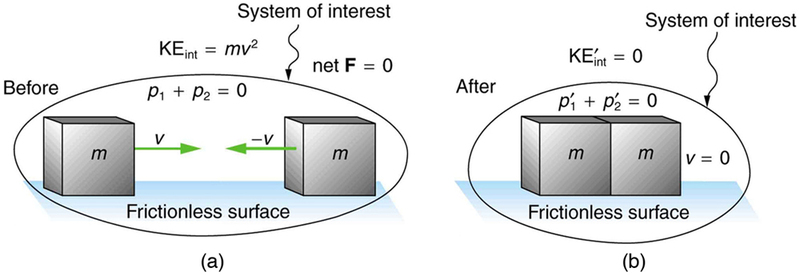
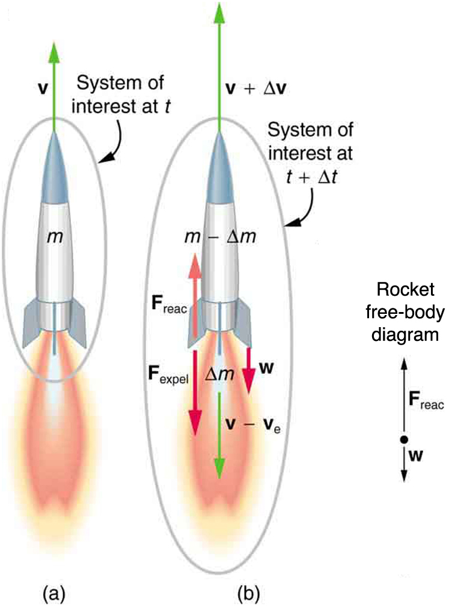

- Define linear momentum.
- Explain the relationship between momentum and force.
- State Newton’s second law of motion in terms of momentum.
- Calculate momentum given mass and velocity.
The scientific definition of linear momentum is consistent with most people’s intuitive understanding of momentum: a large, fast-moving object has greater momentum than a smaller, slower object.Linear momentumis defined as the product of a system’s mass multiplied by its velocity.
Linear momentum is defined as the product of a system’s mass multiplied by its velocity:
Momentum is directly proportional to the object’s mass and also its velocity. Thus the greater an object’s mass or the greater its velocity, the greater its momentum. Momentum \(p\) is a vector having the same direction as the velocity \(v\). The SI unit for momentum is \(kg \cdot m/s.\)
No information is given regarding direction, and so we can calculate only the magnitude of the momentum, \(p\) (As usual, a symbol that is in italics is a magnitude, whereas one that is italicized, boldfaced, and has an arrow is a vector.) In both parts of this example, the magnitude of momentum can be calculated directly from the definition of momentum given in Equation \ref{linearmomentum}, which becomes
when only magnitudes are considered.
To determine the momentum of the player, substitute the known values for the player’s mass and speed into the equation.
To determine the momentum of the ball, substitute the known values for the ball’s mass and speed into the equation.
The ratio of the player’s momentum to that of the ball is
Although the ball has greater velocity, the player has a much greater mass. Thus the momentum of the player is much greater than the momentum of the football, as you might guess. As a result, the player’s motion is only slightly affected if he catches the ball. We shall quantify what happens in such collisions in terms of momentum in later sections.
The importance of momentum, unlike the importance of energy, was recognized early in the development of classical physics. Momentum was deemed so important that it was called the “quantity of motion.” Newton actually stated hissecond law of motionin terms of momentum: The net external force equals the change in momentum of a system divided by the time over which it changes.
Newton’s Second Law of Motion in Terms of Momentum
The net external force equals the change in momentum of a system divided by the time over which it changes.
where \(F_{net} \) is the net external force, \(\Delta p\) is the change in momentum, and \(\Delta t\) is the change in time.
#### Making Connections: Force and Momentum
Force and momentum are intimately related. Force acting over time can change momentum, and Newton’s second law of motion, can be stated in its most broadly applicable form in terms of momentum. Momentum continues to be a key concept in the study of atomic and subatomic particles in quantum mechanics.
This statement of Newton’s second law of motion includes the more familiar \(F_{net} = ma\) as a special case. We can derive this form as follows. First, note that the change in momentum \(\Delta p\) is given by
If the mass of the system is constant, then
So that for constant mass, Newton’s second law of motion becomes
Because \(\frac{\Delta v}{\Delta t} = a, \) we get the familiar equation
when the mass of the system isconstant.
Newton’s second law of motion stated in terms of momentum is more generally applicable because it can be applied to systems where the mass is changing, such as rockets, as well as to systems of constant mass. We will consider systems with varying mass in some detail;however, the relationship between momentum and force remains useful when mass is constant, such as in the following example.
During the 2007 French Open, Venus Williams hit the fastest recorded serve in a premier women’s match, reaching a speed of 58 m/s (209 km/h). What is the average force exerted on the 0.057-kg tennis ball by Venus Williams’ racquet, assuming that the ball’s speed just after impact is 58 m/s, that the initial horizontal component of the velocity before impact is negligible, and that the ball remained in contact with the racquet for 5.0 ms (milliseconds)?
This problem involves only one dimension because the ball starts from having no horizontal velocity component before impact. Newton’s second law stated in terms of momentum is then written as
As noted above, when mass is constant, the change in momentum is given by
In this example, the velocity just after impact and the change in time are given; thus, once \(\Delta p\) s calculated, \(F_{net} = \frac{\Delta p}{\Delta t}\) can be used to find the force.
To determine the change in momentum, substitute the values for the initial and final velocities into the equation above.
Now the magnitude of the net external force can determined by using \(F_{net} = \frac{\Delta p}{\Delta t}\)
where we have retained only two significant figures in the final step.
This quantity was the average force exerted by Venus Williams’ racquet on the tennis ball during its brief impact (note that the ball also experienced the 0.56-N force of gravity, but that force was not due to the racquet). This problem could also be solved by first finding the acceleration and then using \(F = ma\) but one additional step would be required compared with the strategy used in this example.
📖 OpenStax College Physics, Section 8.1. openstax.org · CC BY 4.0
- Define impulse.
- Describe effects of impulses in everyday life.
- Determine the average effective force using graphical representation.
- Calculate average force and impulse given mass, velocity, and time.
The effect of a force on an object depends on how long it acts, as well as how great the force is. In[link], a very large force acting for a short time had a great effect on the momentum of the tennis ball. A small force could cause the samechange in momentum, but it would have to act for a much longer time. For example, if the ball were thrown upward, the gravitational force (which is much smaller than the tennis racquet’s force) would eventually reverse the momentum of the ball. Quantitatively, the effect we are talking about is the change in momentum \(\Delta p\).
By rearranging the equation \(\Delta F_{net} = \frac{\Delta p}{\Delta t} \) to be
we can see how the change in momentum equals the average net external force multiplied by the time this force acts. The quantity \(F_{net} \Delta t\) is given the nameimpulse. Impulse is the same as the change in momentum.
Impulse: Change in Momentum
Change in momentum equals the average net external force multiplied by the time this force acts.
The quantity \( F_{net}\Delta t\) is given the name impulse.
There are many ways in which an understanding of impulse can save lives, or at least limbs. The dashboard padding in a car, and certainly the airbags, allow the net force on the occupants in the car to act over a much longer time when there is a sudden stop. The momentum change is the same for an occupant, whether an air bag is deployed or not, but the force (to bring the occupant to a stop) will be much less if it acts over a larger time. Cars today have many plastic components. One advantage of plastics is their lighter weight, which results in better gas mileage. Another advantage is that a car will crumple in a collision, especially in the event of a head-on collision. A longer collision time means the force on the car will be less. Deaths during car races decreased dramatically when the rigid frames of racing cars were replaced with parts that could crumple or collapse in the event of an accident.
Bones in a body will fracture if the force on them is too large. If you jump onto the floor from a table, the force on your legs can be immense if you land stiff-legged on a hard surface. Rolling on the ground after jumping from the table, or landing with a parachute, extends the time over which the force (on you from the ground) acts.
Two identical billiard balls strike a rigid wall with the same speed, and are reflected without any change of speed. The first ball strikes perpendicular to the wall. The second ball strikes the wall at an angle of \(30^o\) from the perpendicular, and bounces off at an angle of \(30^o\) from perpendicular to the wall.
In order to determine the force on the wall, consider the force on the ball due to the wall using Newton’s second law and then apply Newton’s third law to determine the direction. Assume the \(x-\)axis to be normal to the wall and to be positive in the initial direction of motion. Choose the \(y-\)axis to be along the wall in the plane of the second ball’s motion. The momentum direction and the velocity direction are the same.
In order to determine the force on the wall, consider the force on the ball due to the wall using Newton’s second law and then apply Newton’s third law to determine the direction. Assume the \(x-\)axis to be normal to the wall and to be positive in the initial direction of motion. Choose the \(y-\)axis to be along the wall in the plane of the second ball’s motion. The momentum direction and the velocity direction are the same.
The first ball bounces directly into the wall and exerts a force on it in the +\(x\) direction. Therefore the wall exerts a force on the ball in the -\(y\) direction. The second ball continues with the same momentum component in the \(y-\) direction, but reverses its \(x\)-component of momentum, as seen by sketching a diagram of the angles involved and keeping in mind the proportionality between velocity and momentum.
These changes mean the change in momentum for both balls is in the \(-x\) direction, so the force of the wall on each ball is along the \(-x\) direction.
Calculate the change in momentum for each ball, which is equal to the impulse imparted to the ball.
Let \(\mu\) be the speed of each ball before and after collision with the wall, and \(m\) the mass of each ball. Choose the \(x-\)axis and \(y-\)axis as previously described, and consider the change in momentum of the first ball which strikes perpendicular to the wall.
Impulse is the change in momentum vector. Therefore the \(x-\)component of impulse is equal to -\(2m\mu\) and the \(y-\)component of impulse is equal to zero.
Now consider the change in momentum of the second ball.
It should be noted here that while \(p_x\) changes sign after the collision, \(p_y\) does not. Therefore the -component of impulse is equal to \(-2m\mu \, cos \, 30^o\) and the \(y-\)component of impulse is equal to zero.
The ratio of the magnitudes of the impulse imparted to the balls is
The direction of impulse and force is the same as in the case of (a); it is normal to the wall and along the negative \(x-\)direction. Making use of Newton’s third law, the force on the wall due to each ball is normal to the wall along the positive \(x-\)direction.
Our definition of impulse includes an assumption that the force is constant over the time interval \(\Delta t\).Forces are usually not constant. Forces vary considerably even during the brief time intervals considered. It is, however, possible to find an average effective force \(F_{eff}\) that produces the same result as the corresponding time-varying force.Figureshows a graph of what an actual force looks like as a function of time for a ball bouncing off the floor. The area under the curve has units of momentum and is equal to the impulse or change in momentum between times \(t_1\) and \(t_2\). That area is equal to the area inside the rectangle bounded by \(F_{eff}, \, t_1\), and \(t_2\) Thus the impulses and their effects are the same for both the actual and effective forces.

MAKING CONNECTIONS: Take-Home Investigation—Hand Movement and Impulse
Try catching a ball while “giving” with the ball, pulling your hands toward your body. Then, try catching a ball while keeping your hands still. Hit water in a tub with your full palm. After the water has settled, hit the water again by diving your hand with your fingers first into the water. (Your full palm represents a swimmer doing a belly flop and your diving hand represents a swimmer doing a dive.) Explain what happens in each case and why. Which orientations would you advise people to avoid and why?
MAKING CONNECTIONS: Constant Force anD Constant Acceleration
The assumption of a constant force in the definition of impulse is analogous to the assumption of a constant acceleration in kinematics. In both cases, nature is adequately described without the use of calculus.
📖 OpenStax College Physics, Section 8.2. openstax.org · CC BY 4.0
- Describe the principle of conservation of momentum.
- Derive an expression for the conservation of momentum.
- Explain conservation of momentum with examples.
- Explain the principle of conservation of momentum as it relates to atomic and subatomic particles.
Momentum is an important quantity because it is conserved. Yet it was not conserved in the examples inImpulseandLinear Momentum and Force, where large changes in momentum were produced by forces acting on the system of interest. Under what circumstances is momentum conserved?
The answer to this question entails considering a sufficiently large system. It is always possible to find a larger system in which total momentum is constant, even if momentum changes for components of the system. If a football player runs into the goalpost in the end zone, there will be a force on him that causes him to bounce backward. However, the Earth also recoils —conserving momentum—because of the force applied to it through the goalpost. Because Earth is many orders of magnitude more massive than the player, its recoil is immeasurably small and can be neglected in any practical sense, but it is real nevertheless.
Consider what happens if the masses of two colliding objects are more similar than the masses of a football player and Earth—for example, one car bumping into another, as shown in Figure . Both cars are coasting in the same direction when the lead car (labeled \(m_2\) is bumped by the trailing car (labeled \(m_1\). The only unbalanced force on each car is the force of the collision. (Assume that the effects due to friction are negligible.) Car 1 slows down as a result of the collision, losing some momentum, while car 2 speeds up and gains some momentum. We shall now show that the total momentum of the two-car system remains constant.
![A brown car with velocity V 1 and mass m 1 moves toward the right behind a tan car of velocity V 2 and mass m 2. The system of interest has a total momentum equal to the sum of individual momentums p 1 and p 2. The net force between them is zero before they collide with one another. The brown car after colliding with the tan car has velocity V 1prime and momentum p 1 prime and the light brown car moves with velocity V 2 prime and momentum p 2 prime. Both move in the same direction as before collision. This system of interest has a total momentum equal to the sum p 1 prime and p 2 prime.](images/ch8/fig8-2-a-brown-car-with-velocity-v-1-and-mass-m.jpg)
Using the definition of impulse, the change in momentum of car 1 is given by \[\Delta p_1 = F_1 \Delta t,\] is the force on car 1 due to car 2, and \(\Delta t\)
where \(F_1\) is the time the force acts (the duration of the collision). Intuitively, it seems obvious that the collision time is the same for both cars, but it is only true for objects traveling at ordinary speeds. This assumption must be modified for objects travelling near the speed of light, without affecting the result that momentum is conserved.
Similarly, the change in momentum of car 2 is
where \(F_2\) is the force on car 2 due to car 1, and we assume the duration of the collision \(\Delta t\) is the same for both cars. We know from Newton’s third law that \(F_2 = - F_1\), and so
Thus, the changes in momentum are equal and opposite, and
Because the changes in momentum add to zero, the total momentum of the two-car system is constant. That is,
where \(p_1'\) and \(p_2'\) are the momenta of cars 1 and 2 after the collision. (We often use primes to denote the final state.)
This result—that momentum is conserved—has validity far beyond the preceding one-dimensional case. It can be similarly shown that total momentum is conserved for any isolated system, with any number of objects in it. In equation form, theconservation of momentum principlefor an isolated system is written
where \( p_{tot}\) is the total momentum (the sum of the momenta of the individual objects in the system) and \( p_{tot},\) is the total momentum some time later. (The total momentum can be shown to be the momentum of the center of mass of the system.) Anisolated systemis defined to be one for which the net external force is zero \((F_{net} = 0)\).
Conservation of Momentum Principle
An isolated system is defined to be one for which the net external force is zero \((F_{net} = 0)\).
Perhaps an easier way to see that momentum is conserved for an isolated system is to consider Newton’s second law in terms of momentum, \(F_{net} = \frac{\Delta p_{tot}}{\Delta t}\). For an isolated system, \((F_{net} = 0)\); thus \(\Delta p_{tot} = 0\) and \(\Delta p\) is constant.
We have noted that the three length dimensions in nature x, y and z are independent, and it is interesting to note that momentum can be conserved in different ways along each dimension. For example, during projectile motion and where air resistance is negligible, momentum is conserved in the horizontal direction because horizontal forces are zero and momentum is unchanged. But along the vertical direction, the net vertical force is not zero and the momentum of the projectile is not conserved (Figure . However, if the momentum of the projectile-Earth system is considered in the vertical direction, we find that the total momentum is conserved.
![A space probe is projected upward. It takes a parabolic path. No horizontal net force acts on. The horizontal component of momentum remains conserved. The vertical net force is not zero and the vertical component of momentum is not a constant. When the space probe separates, the horizontal net force remains zero as the force causing separation is internal to the system. The vertical net force is not zero and the vertical component of momentum is also not a constant after separation. The centre of mass however continues in the same parabolic path.](images/ch8/fig8-3-a-space-probe-is-projected-upward-it-tak.jpg)
The conservation of momentum principle can be applied to systems as different as a comet striking Earth and a gas containing huge numbers of atoms and molecules. Conservation of momentum is violated only when the net external force is not zero. But another larger system can always be considered in which momentum is conserved by simply including the source of the external force. For example, in the collision of two cars considered above, the two-car system conserves momentum while each one-car system does not.
MAKING CONNECTIONS: TAKE-HOME Investigation—Drop of Tennis Ball and a Basketball
Hold a tennis ball side by side and in contact with a basketball. Drop the balls together. (Be careful!) What happens? Explain your observations. Now hold the tennis ball above and in contact with the basketball. What happened? Explain your observations. What do you think will happen if the basketball ball is held above and in contact with the tennis ball?
MAKING CONNECTIONS: TAKE-HOME Investigation—Two Tennis Balls in a Ballistic Trajectory
Tie two tennis balls together with a string about a foot long. Hold one ball and let the other hang down and throw it in a ballistic trajectory. Explain your observations. Now mark the center of the string with bright ink or attach a brightly colored sticker to it and throw again. What happened? Explain your observations.
Some aquatic animals such as jellyfish move around based on the principles of conservation of momentum. A jellyfish fills its umbrella section with water and then pushes the water out resulting in motion in the opposite direction to that of the jet of water. Squids propel themselves in a similar manner but, in contrast with jellyfish, are able to control the direction in which they move by aiming their nozzle forward or backward. Typical squids can move at speeds of 8 to 12 km/h.
The ballistocardiograph (BCG) was a diagnostic tool used in the second half of the 20th century to study the strength of the heart. About once a second, your heart beats, forcing blood into the aorta. A force in the opposite direction is exerted on the rest of your body (recall Newton’s third law). A ballistocardiograph is a device that can measure this reaction force. This measurement is done by using a sensor (resting on the person) or by using a moving table suspended from the ceiling. This technique can gather information on the strength of the heart beat and the volume of blood passing from the heart. However, the electrocardiogram (ECG or EKG) and the echocardiogram (cardiac ECHO or ECHO; a technique that uses ultrasound to see an image of the heart) are more widely used in the practice of cardiology.
Making Connections: Conservation of Momentum and Collision
Conservation of momentum is quite useful in describing collisions. Momentum is crucial to our understanding of atomic and subatomic particles because much of what we know about these particles comes from collision experiments.
The conservation of momentum principle not only applies to the macroscopic objects, it is also essential to our explorations of atomic and subatomic particles. Giant machines hurl subatomic particles at one another, and researchers evaluate the results by assuming conservation of momentum (among other things).
On the small scale, we find that particles and their properties are invisible to the naked eye but can be measured with our instruments, and models of these subatomic particles can be constructed to describe the results. Momentum is found to be a property of all subatomic particles including massless particles such as photons that compose light. Momentum being a property of particles hints that momentum may have an identity beyond the description of an object’s mass multiplied by the object’s velocity. Indeed, momentum relates to wave properties and plays a fundamental role in what measurements are taken and how we take these measurements. Furthermore, we find that the conservation of momentum principle is valid when considering systems of particles. We use this principle to analyze the masses and other properties of previously undetected particles, such as the nucleus of an atom and the existence of quarks that make up particles of nuclei. Figure below illustrates how a particle scattering backward from another implies that its target is massive and dense. Experiments seeking evidence thatquarksmake up protons (one type of particle that makes up nuclei) scattered high-energy electrons off of protons (nuclei of hydrogen atoms). Electrons occasionally scattered straight backward in a manner that implied a very small and very dense particle makes up the proton—this observation is considered nearly direct evidence of quarks. The analysis was based partly on the same conservation of momentum principle that works so well on the large scale.

\[p_{tot} = constant\] or
📖 OpenStax College Physics, Section 8.3. openstax.org · CC BY 4.0
- Describe an elastic collision of two objects in one dimension.
- Define internal kinetic energy.
- Derive an expression for conservation of internal kinetic energy in a one dimensional collision.
- Determine the final velocities in an elastic collision given masses and initial velocities.
Let us consider various types of two-object collisions. These collisions are the easiest to analyze, and they illustrate many of the physical principles involved in collisions. The conservation of momentum principle is very useful here, and it can be used whenever the net external force on a system is zero.
We start with the elastic collision of two objects moving along the same line—a one-dimensional problem. Anelastic collisionis one that also conserves internal kinetic energy.Internal kinetic energyis the sum of the kinetic energies of the objects in the system.Figureillustrates an elastic collision in which internal kinetic energy and momentum are conserved.
Truly elastic collisions can only be achieved with subatomic particles, such as electrons striking nuclei. Macroscopic collisions can be very nearly, but not quite, elastic—some kinetic energy is always converted into other forms of energy such as heat transfer due to friction and sound. One macroscopic collision that is nearly elastic is that of two steel blocks on ice. Another nearly elastic collision is that between two carts with spring bumpers on an air track. Icy surfaces and air tracks are nearly frictionless, more readily allowing nearly elastic collisions on them.
Anelastic collisionis one that conserves internal kinetic energy.
Internal Kinetic Energy
Internalkinetic energyis the sum of the kinetic energies of the objects in the system.
![The system of interest contains a smaller mass m sub1 and a larger mass m sub2 moving on a frictionless surface. M sub 2 moves with velocity V sub 2 and momentum p sub 2 and m sub 1 moves behind m sub 2, with velocity V sub 1 and momentum p sub 1 toward the right direction. P 1 plus P 2 equals p total. The net force is zero. After collision m sub 1 moves toward the left with velocity V sub 1 while m sub 2 moves toward the right with velocity V sub 2 on the same frictionless surface. The momentum of m sub 1 becomes p 1 prime and m 2 becomes p 2 prime now. P 1 prime plus p 2 prime equals p total.](images/ch8/fig8-5-the-system-of-interest-contains-a-smalle.jpg)
Now, to solve problems involving one-dimensional elastic collisions between two objects we can use the equations for conservation of momentum and conservation of internal kinetic energy. First, the equation for conservation of momentum for two objects in a one-dimensional collision is
\[p_1 +p_2 = p'_1 + p'_2 \, (F_{net} = 0)\] or
where the primes (') indicate values after the collision. By definition, an elastic collision conserves internal kinetic energy, and so the sum of kinetic energies before the collision equals the sum after the collision. Thus,
expresses the equation for conservation of internal kinetic energy in a one-dimensional collision.
Calculate the velocities of two objects following an elastic collision, given that
First, visualize what the initial conditions mean—a small object strikes a larger object that is initially at rest. This situation is slightly simpler than the situation shown inFigurewhere both objects are initially moving. We are asked to find two unknowns (the final velocities \(v'_1\) and \( v'_2\)). To find two unknowns, we must use two independent equations. Because this collision is elastic, we can use the above two equations. Both can be simplified by the fact that object 2 is initially at rest, and thus \(v_2 = 0.\) Once we simplify these equations, we combine them algebraically to solve for the unknowns.
For this problem, note that \(v_2 = 0\) and use conservation of momentum. Thus,
\[p_1 = p'_1 + p'_2\] or
Using conservation of internal kinetic energy and that \(v_2 = 0\),
Solving the first equation (momentum equation) for \(v'_2\), we obtain
Substituting this expression into the second equation (internal kinetic energy equation) eliminates the variable \(v'_2\), leaving only \(v'_1\) as an unknown (the algebra is left as an exercise for the reader). There are two solutions to any quadratic equation; in this example, they are as an unknown (the algebra is left as an exercise for the reader). There are two solutions to any quadratic equation; in this example, they are
\[v'_1 = 4.00 \, m/s\] and
As noted when quadratic equations were encountered in earlier chapters, both solutions may or may not be meaningful. In this case, the first solution is the same as the initial condition. The first solution thus represents the situation before the collision and is discarded. The second solution \((v'_1 = -3.00 \, m/s\)) is negative, meaning that the first object bounces backward. When this negative value of \(v'_1\) is used to find the velocity of the second object after the collision, we get
\[v'_2 = \dfrac{m_1}{m_2}(v_1 - v'_1) = \dfrac{0.500 \, kg}{3.50 \, kg}[4.00 - (-3.00)] \, m/s\] or
The result of this example is intuitively reasonable. A small object strikes a larger one at rest and bounces backward. The larger one is knocked forward, but with a low speed. (This is like a compact car bouncing backward off a full-size SUV that is initially at rest.) As a check, try calculating the internal kinetic energy before and after the collision. You will see that the internal kinetic energy is unchanged at 4.00 J. Also check the total momentum before and after the collision; you will find it, too, is unchanged.
The equations for conservation of momentum and internal kinetic energy as written above can be used to describe any one-dimensional elastic collision of two objects. These equations can be extended to more objects if needed.'4.00 m/s
Making Connections: Take-Home Investigation—Ice Cubes and Elastic
Find a few ice cubes which are about the same size and a smooth kitchen tabletop or a table with a glass top. Place the ice cubes on the surface several centimeters away from each other. Flick one ice cube toward a stationary ice cube and observe the path and velocities of the ice cubes after the collision. Try to avoid edge-on collisions and collisions with rotating ice cubes. Have you created approximately elastic collisions? Explain the speeds and directions of the ice cubes using momentum.
PHET EXPLORATIONS: COLLISIONS LAB
Investigate collisions on an air hockey table. Set up your own experiments: vary the number of discs, masses and initial conditions. Is momentum conserved? Is kinetic energy conserved? Vary the elasticity and see what happens.

📖 OpenStax College Physics, Section 8.4. openstax.org · CC BY 4.0
- Define inelastic collision.
- Explain perfectly inelastic collision.
- Apply an understanding of collisions to sports.
- Determine recoil velocity and loss in kinetic energy given mass and initial velocity.
We have seen that in an elastic collision, internal kinetic energy is conserved. Aninelastic collisionis one in which the internal kinetic energy changes (it is not conserved). This lack of conservation means that the forces between colliding objects may remove or add internal kinetic energy. Work done by internal forces may change the forms of energy within a system. For inelastic collisions, such as when colliding objects stick together, this internal work may transform some internal kinetic energy into heat transfer. Or it may convert stored energy into internal kinetic energy, such as when exploding bolts separate a satellite from its launch vehicle.
Definition: Inelastic Collisions
An inelastic collision is one in which the internal kinetic energy changes (it is not conserved).
Figure shows an example of an inelastic collision. Two objects that have equal masses head toward one another at equal speeds and then stick together. Their total internal kinetic energy is initially
The two objects come to rest after sticking together, conserving momentum. But the internal kinetic energy is zero after the collision. A collision in which the objects stick together is sometimes called aperfectly inelastic collisionbecause it reduces internal kinetic energy more than does any other type of inelastic collision. In fact, such a collision reduces internal kinetic energy to the minimum it can have while still conserving momentum.

Definition: Perfectly Inelastic Collisions
A collision in which the objects stick together is sometimes called “perfectly inelastic.”
![The first picture shows an ice hockey goal keeper of mass m 2 bent on his knees, turning to the left on a frictionless ice surface with zero velocity and a hockey puck of mass m 1 and velocity V 1 moving toward the right. The total momentum of the system is p 1 which is the momentum of the puck and the net force is zero. The second picture shows the goalie to catch the puck. The puck moves with velocity V 1prime and the goalie with velocity V 2 prime and their magnitudes are equal. The momentum of the puck is p 1 prime and the goalie is p 2 prime. The total momentum remains same as before collision. But the kinetic energy after collision is lesser than the kinetic energy before collision. This is true for inelastic collisions.](images/ch8/fig8-8-the-first-picture-shows-an-ice-hockey-go.png)
Momentum is conserved because the net external force on the puck-goalie system is zero. We can thus use conservation of momentum to find the final velocity of the puck and goalie system. Note that the initial velocity of the goalie is zero and that the final velocity of the puck and goalie are the same. Once the final velocity is found, the kinetic energies can be calculated before and after the collision and compared as requested.
Momentum is conserved because the net external force on the puck-goalie system is zero.
Conservation of momentum is
Because the goalie is initially at rest, we know \(v_2 = 0.\) Because the goalie catches the puck, the final velocities are equal, or \(v'_1 = v'_2 = v'.\) Thus, the conservation of momentum equation simplifies to
Solving for \(v'\) yields
Entering known values in this equation, we get
The change in internal kinetic energy is thus
where the minus sign indicates that the energy was lost.
Nearly all of the initial internal kinetic energy is lost in this perfectly inelastic collision. \(KE_{int} \) is mostly converted to thermal energy and sound.
During some collisions, the objects do not stick together and less of the internal kinetic energy is removed—such as happens in most automobile accidents. Alternatively, stored energy may be converted into internal kinetic energy during a collision. Figure shows a one-dimensional example in which two carts on an air track collide, releasing potential energy from a compressed spring. Example deals with data from such a collision.
![An uncoiled spring is connected to a glider with triangular cross sectional area of mass m 1 which moves with velocity v 1 toward the right. Another solid glider of mass m 2 and triangular cross sectional area moves toward the left with velocity V 2 on a frictionless surface. The total momentum is the sum of their individual momentum p 1 and p 2. After collision m 1 moves to the left with velocity V 1 prime and momentum p 1prime. M 2 moves to the right with velocity V 2 prime. Their individual momentum becomes p 1prime and p 2 prime but the total momentum remains the same. The internal kinetic energy after collision is greater than the kinetic energy before collision.](images/ch8/fig8-9-an-uncoiled-spring-is-connected-to-a-gli.png)
Collisions are particularly important in sports and the sporting and leisure industry utilizes elastic and inelastic collisions. Let us look briefly at tennis. Recall that in a collision, it is momentum and not force that is important. So, a heavier tennis racquet will have the advantage over a lighter one. This conclusion also holds true for other sports—a lightweight bat (such as a softball bat) cannot hit a hardball very far.
The location of the impact of the tennis ball on the racquet is also important, as is the part of the stroke during which the impact occurs. A smooth motion results in the maximizing of the velocity of the ball after impact and reduces sports injuries such as tennis elbow. A tennis player tries to hit the ball on the “sweet spot” on the racquet, where the vibration and impact are minimized and the ball is able to be given more velocity. Sports science and technologies also use physics concepts such as momentum and rotational motion and vibrations.
Take-Home Experiment—Bouncing of Tennis Ball
In the collision pictured in Figure , two carts collide inelastically. Cart 1 (denoted \(m_1\) carries a spring which is initially compressed. During the collision, the spring releases its potential energy and converts it to internal kinetic energy. The mass of cart 1 and the spring is 0.350 kg, and the cart and the spring together have an initial velocity of \(-0.500 \, m/s\). After the collision, cart 1 is observed to recoil with a velocity of \(-4.00 \, m/s\).
We can use conservation of momentum to find the final velocity of cart 2, because \(F_{net} = 0\) (the track is frictionless and the force of the spring is internal). Once this velocity is determined, we can compare the internal kinetic energy before and after the collision to see how much energy was released by the spring.
As before, the equation for conservation of momentum in a two-object system is
The only unknown in this equation is \(v'_2.\) Solving for \(v'_2\) and substituting known values into the previous equation fields
The internal kinetic energy before the collision is
After the collision, the internal kinetic energy is
The change in internal kinetic energy is thus
The final velocity of cart 2 is large and positive, meaning that it is moving to the right after the collision. The internal kinetic energy in this collision increases by 5.46 J. That energy was released by the spring.
📖 OpenStax College Physics, Section 8.5. openstax.org · CC BY 4.0
- Discuss two dimensional collisions as an extension of one dimensional analysis.
- Define point masses.
- Derive an expression for conservation of momentum alongx-axis andy-axis.
- Describe elastic collisions of two objects with equal mass.
- Determine the magnitude and direction of the final velocity given initial velocity, and scattering angle.
In the previous two sections, we considered only one-dimensional collisions; during such collisions, the incoming and outgoing velocities are all along the same line. But what about collisions, such as those between billiard balls, in which objects scatter to the side? These are two-dimensional collisions, and we shall see that their study is an extension of the one-dimensional analysis already presented. The approach taken (similar to the approach in discussing two-dimensional kinematics and dynamics) is to choose a convenient coordinate system and resolve the motion into components along perpendicular axes. Resolving the motion yields a pair of one-dimensional problems to be solved simultaneously.
One complication arising in two-dimensional collisions is that the objects might rotate before or after their collision. For example, if two ice skaters hook arms as they pass by one another, they will spin in circles. We will not consider such rotation until later, and so for now we arrange things so that no rotation is possible. To avoid rotation, we consider only the scattering ofpoint masses—that is, structureless particles that cannot rotate or spin.
We start by assuming that \(F_{net} = 0,\) so that momentum \(p\) is conserved. The simplest collision is one in which one of the particles is initially at rest. (SeeFigure.) The best choice for a coordinate system is one with an axis parallel to the velocity of the incoming particle, as shown inFigure. Because momentum is conserved, the components of momentum along the \(x-\) and \(y-\) axes (\(p_x \) and \(p_y\)) will also be conserved, but with the chosen coordinate system, \(p_y\) is initially zero and \(p_x\) is the momentum of the incoming particle. Both facts simplify the analysis. (Even with the simplifying assumptions of point masses, one particle initially at rest, and a convenient coordinate system, we still gain new insights into nature from the analysis of two-dimensional collisions.)
![A purple ball of mass m1 moves with velocity V 1 toward the right side along the X direction. The orange ball of mass m 2 is initially at rest. The total momentum is the momentum possessed by purple ball only. After collision purple ball moves with velocity v 1prime in the positive X Y plane making an angle theta 1 with the x axis and the orange ball moves in the X Y plane below the x axis making an angle theta 2 with the x axis. The total momentum would be the sum of the momentum of purple ball p1 prime and the orange ball p 2 prime. In two-dimensional collision too the momentum before and after collision remains the same.](images/ch8/fig8-10-a-purple-ball-of-mass-m1-moves-with-velo.jpg)
Along the \(x\)-axis, the equation for conservation of momentum is \[p_{1x} + p_{2x} = p'_{1x} + p'_{2x} .\]
Where the subscripts denote the particles and axes and the primes denote the situation after the collision. In terms of masses and velocities, this equation is \[m_1v_1 + m_2v_{2x} = m_1v'_{1x} + m_2v'_{2x}.\]
But because particle 2 is initially at rest, this equation becomes \[m_1v_1 = m_1v'_{1x} + m_2v'_{2x}.\]
The components of the velocities along the \(x\)-axis have the form \(v \, cos \, \theta\). Because particle 1 initially moves along the \(x\)-axis, we find \(v_{1x} = v_1\).
Conservation of momentum along the \(x\)-axis gives the following equation \[ m_1v_1 = m_1v'_1 \, cos \, \theta_1 + m_2v'_2 \, cos \, \theta_2,\] where \(\theta_1\) and \(\theta_2\) are as shown inFigure.
Conservation of Momentum Along the x-axis
Along the \(y\)-axis, the equation for conservation of momentum is \[p_{1y} + p_{2y} = p'_{1y} + p'_{2y},\] or \[m_1v_1 + m_2v_{2y} = m_1v'_{1y} + m_2v'_{2y}.\]
But \(v_{1y} \) is zero, because particle 1 initially moves along the \(x\)-axis. Because particle 2 is initially at rest, \(v_{2y}\) is also zero. The equation for conservation of momentum along the \(y\)-axis becomes \[0 = m_1v'_{1y} + m_2v'_{2y}.\]
The components of the velocities along the \(y\)-axis have the form \(v \, sin \, \theta\).
Thus, conservation of momentum along the \(y\)-axis gives the following equation: \[0 = m_1v'_{1y} \, sin \, \theta_1 + m_2v'_{2y} \, sin \, \theta_2.\]
Conservation of Momentum Along y-axis
The equations of conservation of momentum along the \(x\)-axis and \(y\)-axis are very useful in analyzing two-dimensional collisions of particles, where one is originally stationary (a common laboratory situation). But two equations can only be used to find two unknowns, and so other data may be necessary when collision experiments are used to explore nature at the subatomic level.
Example:Determining the Final Velocity of an Unseen Object from the
Scattering of Another Object
Suppose the following experiment is performed. A 0.250-kg object \((m_1)\) is slid on a frictionless surface into a dark room, where it strikes an initially stationary object with mass of 0.400 kg \((m_2)\). The 0.250-kg object emerges from the room at an angle of \(45^o\) with its incoming direction.The speed of the 0.250-kg object is originally 2.00 m/s and is 1.50 m/s after the collision. Calculate the magnitude and direction of the velocity \((v'_2\) and \(\theta_2)\) of the 0.400-kg object after the collision.
Momentum is conserved because the surface is frictionless. The coordinate system shown inFigureis one in which \(m_2\) is originally at rest and the initial velocity is parallel to the \(x\)-axis, so that conservation of momentum along the \(x\)- and \(y\)-axes is applicable. Everything is known in these equations except \(v'_2\) and \(\theta_2\), which are precisely the quantities we wish to find. We can find two unknowns because we have two independent equations: the equations describing the conservation of momentum in the \(x\)- and \(y\)-directions.
Solving \(m_1v_1 = m_1v'_1 \, cos \, \theta_1 + m_2v'_2 \, cos \, \theta_2\) for \(v'_2 \, cos \, \theta_2\) and \(0 = m_1v'_{1y} \, sin \, \theta_1 + m_2v'_{2y} \, sin \, \theta_2\) for \(v'_2 \, sin \, \theta_2\) and taking the ratio yields an equation (in which \(\theta_2\) is the only unknown quantity. Applying the identity \(\left(tan \, \theta = \frac{sin \, \theta}{cos \, \theta} \right) \), we obtain
Entering known values into the previous equation gives
Thus, \[\theta_2 = tan^{-1}9-1.129) = 311.5^o \approx 312^o.\]
Angles are defined as positive in the counter clockwise direction, so this angle indicates that \(m_2\) is scattered to the right inFigure, as expected (this angle is in the fourth quadrant). Either equation for the \(x\)- or \(y\)-axis can now be used to solve for \(v_2\), but the latter equation is easiest because it has fewer terms.
Thus, \[v'_2 = 0.886 \, m/s.\]
It is instructive to calculate the internal kinetic energy of this two-object system before and after the collision. (This calculation is left as an end-of-chapter problem.) If you do this calculation, you will find that the internal kinetic energy is less after the collision, and so the collision is inelastic. This type of result makes a physicist want to explore the system further.
![A purple ball of mass m1 and velocity v one moves in the right direction into a dark room. It collides with an object of mass m two of value zero point four zero milligrams which was initially at rest and then leaves the dark room from the top right hand side making an angle of forty-five degrees with the horizontal and at velocity v one prime. The net external force on the system is zero. The momentum before and after collision remains the same. The velocity v two prime of the mass m two and the angle theta two it would make with the horizontal after collision not given.](images/ch8/fig8-11-a-purple-ball-of-mass-m1-and-velocity-v-.jpg)
Some interesting situations arise when the two colliding objects have equal mass and the collision is elastic. This situation is nearly the case with colliding billiard balls, and precisely the case with some subatomic particle collisions. We can thus get a mental image of a collision of subatomic particles by thinking about billiards (or pool). (Refer toFigurefor masses and angles.) First, an elastic collision conserves internal kinetic energy. Again, let us assume object 2 \(m_2\) is initially at rest. Then, the internal kinetic energy before and after the collision of two objects that have equal masses is
Because the masses are equal, \(m_1 = m_2 = m\). Algebraic manipulation (left to the reader) of conservation of momentum in the \(x\)- and \(y\)-directions can show that
(Remember that \(\theta_2\) is negative here.) The two preceding equations can both be true only if \[mv'_1 v'_2 \, cos (\theta_1 - \theta_2) = 0.\]
There are three ways that this term can be zero. They are
All three of these ways are familiar occurrences in billiards and pool, although most of us try to avoid the second. If you play enough pool, you will notice that the angle between the balls is very close to 90º after the collision, although it will vary from this value if a great deal of spin is placed on the ball. (Large spin carries in extra energy and a quantity calledangular momentum, which must also be conserved.) The assumption that the scattering of billiard balls is elastic is reasonable based on the correctness of the three results it produces. This assumption also implies that, to a good approximation, momentum is conserved for the two-ball system in billiards and pool. The problems below explore these and other characteristics of two-dimensional collisions.
CONNECTIONS TO NUCLEAR AND PARTICLE PHYSICS
Two-dimensional collision experiments have revealed much of what we know about subatomic particles, as we shall see inMedical Applications of Nuclear PhysicsandParticle Physics. Ernest Rutherford, for example, discovered the nature of the atomic nucleus from such experiments.
📖 OpenStax College Physics, Section 8.6. openstax.org · CC BY 4.0
- State Newton’s third law of motion.
- Explain the principle involved in propulsion of rockets and jet engines.
- Derive an expression for the acceleration of the rocket.
- Discuss the factors that affect the rocket’s acceleration.
- Describe the function of a space shuttle.
Rockets range in size from fireworks so small that ordinary people use them to immense Saturn Vs that once propelled massive payloads toward the Moon. The propulsion of all rockets, jet engines, deflating balloons, and even squids and octopuses is explained by the same physical principle—Newton’s third law of motion. Matter is forcefully ejected from a system, producing an equal and opposite reaction on what remains. Another common example is the recoil of a gun. The gun exerts a force on a bullet to accelerate it and consequently experiences an equal and opposite force, causing the gun’s recoil or kick.
Making Connections: Take-Home Experiment —Propulsion of a Balloon
Figure shows a rocket accelerating straight up. In part (a), the rocket has a mass \(m\) and a velocity \(v\) relative to Earth, and hence a momentum \(mv\) In part (b), a time \(\Delta t\) has elapsed in which the rocket has ejected a mass \(\Delta m\) of hot gas at a velocity \(v_e\) relative to the rocket. The remainder of the mass \((m - \Delta m)\) now has a greater velocity \((v + \Delta v)\). The momentum of the entire system (rocket plus expelled gas) has actually decreased because the force of gravity has acted for a time \(\Delta t\), producing a negative impulse \(\Delta p = -mg\Delta t\). (Remember that impulse is the net external force on a system multiplied by the time it acts, and it equals the change in momentum of the system.) So, the center of mass of the system is in free fall but, by rapidly expelling mass, part of the system can accelerate upward. It is a commonly held misconception that the rocket exhaust pushes on the ground. If we consider thrust; that is, the force exerted on the rocket by the exhaust gases, then a rocket’s thrust is greater in outer space than in the atmosphere or on the launch pad. In fact, gases are easier to expel into a vacuum.By calculating the change in momentum for the entire system over \(\Delta t\), and equating this change to the impulse, the following expression can be shown to be a good approximation for the acceleration of the rocket.
where \(a\) is the acceleration of the rocket, \(v_e\) is the escape velocity, \(m\) is the mass of the rocket, \(\ Delta m\) is the mass of the ejected gas, and \(\Delta t\) is the time in which the gas is ejected.

A rocket’s acceleration depends on three major factors, consistent with the equation for acceleration of a rocket.First, the greater the exhaust velocity of the gases relative to the rocket, \(v_e\), the greater the acceleration is. The practical limit for \(v_e\) is about \(2.5 \times 10^3 \, m/s\) for conventional (non-nuclear) hot-gas propulsion systems. The second factor is the rate at which mass is ejected from the rocket. This is the factor \((\Delta m/\Delta t)v_e\), with units of newtons, is called "thrust.” The faster the rocket burns its fuel, the greater its thrust, and the greater its acceleration. The third factor is the mass \(m\) of the rocket. The smaller the mass is (all other factors being the same), the greater the acceleration. The rocket mass \(m\) decreases dramatically during flight because most of the rocket is fuel to begin with, so that acceleration increases continuously, reaching a maximum just before the fuel is exhausted.
Factors Affecting a Rocket’s Acceleration
Example: Calculating Acceleration: Initial Acceleration of a Moon Launch
A Saturn V’s mass at liftoff was \(2.80 \times 10^6 \, kg\), its fuel-burn rate was \(1.40 \times 10^4 \times kg/s\), and the exhaust velocity was \(2.40 \times 10^3 m/s\). Calculate its initial acceleration.
This problem is a straightforward application of the expression for acceleration because is the unknown and all of the terms on the right side of the equation are given.
Substituting the given values into the equation for acceleration yields
This value is fairly small, even for an initial acceleration. The acceleration does increase steadily as the rocket burns fuel, because \(m\) decreases while \(v_e\) and \(\frac{\Delta m}{\Delta t} \) remain constant. Knowing this acceleration and the mass of the rocket, you can show that the thrust of the engines was \(3.36 \times 10^7 \, N.\)
To achieve the high speeds needed to hop continents, obtain orbit, or escape Earth’s gravity altogether, the mass of the rocket other than fuel must be as small as possible. It can be shown that, in the absence of air resistance and neglecting gravity, the final velocity of a one-stage rocket initially at rest is
where \(ln (m_0/m_r) \) is the natural logarithm of the ratio of the initial mass of the rocket \((m_0)\) to what is left \((m_r)\) after all of the fuel is exhausted. (Note that \(v\) is actually the change in velocity, so the equation can be used for any segment of the flight. If we start from rest, the change in velocity equals the final velocity.) For example, let us calculate the mass ratio needed to escape Earth’s gravity starting from rest, given that the escape velocity from Earth is about \(11.2 \times 10^3 \, m/s\), and assuming an exhaust velocity \(v_e = 2.5 \times 10^3 \, m/s.\) \[ln \dfrac{m_0}{m_r} = \dfrac{v}{v_e} = \dfrac{11.2 \times 10^3 \, m/s}{2.5 \times 10^3 \, m/s} = 4.48 \] Solving for \(m_0/m_r\) gives \[\dfrac{m_0}{m_r} = e^{4.48} = 88.\]
Thus, the mass of the rocket is \[ m_r = \dfrac{m_0}{88}.\]
This result means that only \(1/88\) of the mass is left when the fuel is burnt, and \(87/88\) of the initial mass was fuel. Expressed as percentages, 98.9% of the rocket is fuel, while payload, engines, fuel tanks, and other components make up only 1.10%. Taking air resistance and gravitational force into account, the mass \(m_r\) remaining can only be about \(m_0/180\). It is difficult to build a rocket in which the fuel has a mass 180 times everything else. The solution is multistage rockets. Each stage only needs to achieve part of the final velocity and is discarded after it burns its fuel. The result is that each successive stage can have smaller engines and more payload relative to its fuel. Once out of the atmosphere, the ratio of payload to fuel becomes more favorable, too.The space shuttle was an attempt at an economical vehicle with some reusable parts, such as the solid fuel boosters and the craft itself. (SeeFigure) The shuttle’s need to be operated by humans, however, made it at least as costly for launching satellites as expendable, unmanned rockets. Ideally, the shuttle would only have been used when human activities were required for the success of a mission, such as the repair of the Hubble space telescope. Rockets with satellites can also be launched from airplanes. Using airplanes has the double advantage that the initial velocity is significantly above zero and a rocket can avoid most of the atmosphere’s resistance.
Can you avoid the boulder field and land safely, just before your fuel runs out, as Neil Armstrong did in 1969? Our version of this classic video game accurately simulates the real motion of the lunar lander with the correct mass, thrust, fuel consumption rate, and lunar gravity. The real lunar lander is very hard to control.
Phet Explorations: Lunar Lander
Can you avoid the boulder field and land safely, just before your fuel runs out, as Neil Armstrong did in 1969? Our version of this classic video game accurately simulates the real motion of the lunar lander with the correct mass, thrust, fuel consumption rate, and lunar gravity. The real lunar lander is very hard to control.

This page connects force to thrust and weight of a rocket and foxes on Newton's second law: \(a=\frac{F}{mass}.\)
📖 OpenStax College Physics, Section 8.7. openstax.org · CC BY 4.0
| Section | Title |
|---|---|
| 8.1 | 8.1: Linear Momentum and Force |
| 8.2 | 8.2: Impulse |
| 8.3 | 8.3: Conservation of Momentum |
| 8.4 | 8.4: Elastic Collisions in One Dimension |
| 8.5 | 8.5: Inelastic Collisions in One Dimension |
| 8.6 | 8.6: Collisions of Point Masses in Two Dimensions |
| 8.7 | 8.7: Introduction to Rocket Propulsion |